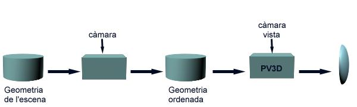

Parteixen de la geometria de l'escena i, generalment, en funció de la posició de l'observador, realitzen una ordenació espacial de les cares que garanteix l'obtenció d'una imatge amb visibilitat correcta si les cares s'envien al procés de visualització en l'ordre establert. Les cares les haurem de pintar amb primitives d'omplert de polígons. L'eliminació de la geometria no visible es produeix de manera natural degut al rasteritzat seqüencial dels polígons sobre els mateixos píxels. S'anomenen algorismes de determinació de visibilitat en espai mixt perquè l'etapa d'ordenació es realitza en espai objecte mentre que el còmput real de la visibilitat es realitza en espai imatge (s'obté un conjunt de píxels amb el seu color). En la figura següent mostrem el diagrama funcional d'un algorisme genèric i l'il·lustrem amb un exemple concret.
|  |
L'algorisme del pintor consisteix en determinar l'ordre de visualització dels objectes d'acord amb la seva disposició espacial i de la posició de l'observador. És d'utilitat en escenes amb objectes convexos fàcilment separables en cel·les que a la seva vegada es puguin ordenar respecte al punt de vista tenint en consideració el solapament entre les seves projeccions. Els objectes es pintaran en l'ordre determinat per les cel·les que els contenen. La restricció a objectes convexos és deguda a que l'eliminació de les seves cares ocultes és directa utilitzant tècniques de filtrat de cares. Altrament caldrien tècniques específiques per a determinar la visibilitat de cada objecte, fet que complicaria la simplicitat de l'algorisme que ens ocupa. Noteu que per cada posició de l'observador s'ha de recalcular l'ordre de visualització de les cel·les.
El BSP és un algorisme extremadament eficient que realitza una ordenació topològica de les cares de l'escena independent de la posició de l'observador i l'emmagatzema en un arbre binari. En els nodes de l'arbre s'emmagatzemen cares (o trossos de cares)de l'escena. La posició de l'observador determina l'ordre de recorregut i visualització dels nodes de l'arbre, fet que produeix de manera natural una visualització de les cares que elimina les parts ocultes. Destacar que en modificar la posició de l'observador no es requereix recalcular l'arbre binari.
La complexitat d'aquesta família d'algorismes ve determinada pel cost
de realització de l'ordenació i varia segons l'algorisme; el cost de
pintat és lineal respecte al nombre de cares.